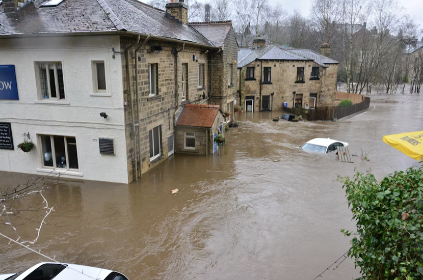
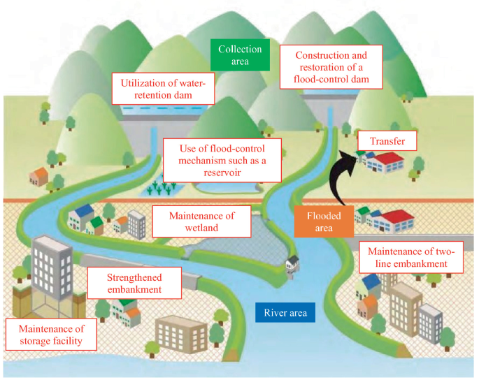

What is Flooding ?
Flooding is one of the most destructive natural disasters, capable of causing widespread devastation to communities, infrastructure, and the environment. It occurs when an area experiences an overflow of water, often due to heavy rainfall, melting snow, or the breaching of dams or levees. Floods can take many forms, ranging from flash floods that develop suddenly, to river and coastal floods that occur over longer periods. The impact of flooding can be catastrophic, leading to property damage, loss of life, and displacement of thousands of people. In addition to the immediate dangers, floods can disrupt essential services, contaminate water supplies, and lead to long-term economic and environmental challenges. As climate change increases the frequency and severity of extreme weather events, understanding flood risks and preparedness measures has become more crucial than ever.

Flood Safety Tips
Floods can be dangerous, but knowing how to stay safe can make a big difference. Here are some important safety tips:
- Move to higher ground as soon as possible.
- Do not walk or drive through floodwaters.
- Listen to emergency broadcasts for updates and evacuation orders.

How to Prevent Flooding
While we can’t prevent floods entirely, there are ways to reduce the impact and minimize damage:
- Install sump pumps and flood barriers in your home.
- Ensure proper drainage systems are in place to redirect water.
- Participate in floodplain management efforts and support community planning.

Flood Guidelines
Follow these general guidelines before, during, and after a flood:
- Before: Create an emergency plan for your family.
- During: Stay indoors, away from windows, and avoid travel.
- After: Wait for official confirmation that it’s safe to leave your home.
Links and Resources :